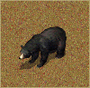
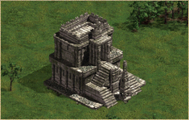
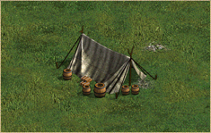
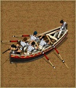
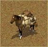

征服美洲大中華區遊戲平台
征服美洲大中華區遊戲平台
其他单位与建筑
遊戲中還有若干不能被任何文明創造的單位與建築。這些單位（一般是自然界的動物）與建築（一般是印第安人的遺跡）通常出現在戰役或者隨機遊戲中，作為隨機出現在地圖上的自然生物、建築或包含在戰役劇情中的士兵或建築。這些單位與建築無法在隨機遊戲中被玩家創造出來，但是可以通過編輯器裡來設定這些單位，而有些單位是僅能在遊戲編輯器裡見到他們。
| 特斯科科 | TEXCOCO |
弓箭手生命值：120 得分：0.20 12 對逃兵的恐懼 0.2% 12 對逃兵的恐懼 0.2% 199 對火槍的恐懼 0.5% 199 對火槍的恐懼 0.5% 5 對陣亡人數的恐懼 0.0% 5 對陣亡人數的恐懼 0.0% |
 |
长矛兵生命值：75 得分：0.10 15 對火槍的恐懼 25.5% 0 對騎兵的恐懼 55.5% 15 對火槍的恐懼 25.5% 0 對騎兵的恐懼 55.5% |
| 中立国 | NATURAL |
| 猎人 生命值：200 得分：0.20 20 對逃兵的恐懼 0.2% 800 對火槍的恐懼 1.5% 0 對陣亡人數的恐懼 0.0% 對騎兵的恐懼 55.5% |
| 動物 | ANIMALS |
| 鳄鱼生命值：400 得分：0.10 60 對火槍的恐懼 65.5% 0 對騎兵的恐懼 55.5% |
鳄鱼生命值：400 得分：0.10 60 對火槍的恐懼 65.5% 0 對騎兵的恐懼 55.5% |
| 鹿生命值：150 得分：0.10 1 0
| 雄鹿生命值：150 得分：0.10 30 0 |
| 熊生命值：400 得分：0.10 60 對火槍的恐懼 65.5% 0 對騎兵的恐懼 55.5% |
野牛生命值：400 得分：0.10 60 對火槍的恐懼 65.5% 0 對騎兵的恐懼 55.5% |
|  | 幼熊生命值：400 得分：0.10 60 對火槍的恐懼 65.5% 0 對騎兵的恐懼 55.5% |
美洲豹生命值：100 得分：0.10 30 對火槍的恐懼 65.5% 0 對騎兵的恐懼 55.5% |
| 海豹生命值：400 得分：0.10 0 對火槍的恐懼 65.5% 對騎兵的恐懼 55.5% |
小海豹生命值：400 得分：0.10 0 對火槍的恐懼 65.5% 對騎兵的恐懼 55.5% |
| 猴子生命值：50 得分：0.10 225 這是一個彩蛋，僅在編輯器中出現 |
| 遺跡 | REMAINS |
| 遺跡 生命值：5000 得分：1.00 内部防御 1-10 200 0 内部最大人口 30 增加的人口 150 |
遺跡 生命值：5000 得分：1.00 内部防御 1-10 200 0 内部最大人口 30 增加的人口 150 |
 |
长者的遗迹 生命值：5000 得分：1.00 内部防御 1-10 200 0 内部最大人口 30 增加的人口 150 |
古代瞭望塔 生命值：5000 得分：1.00 内部防御 1-10 200 0 内部最大人口 30 增加的人口 150 |
|  | 祖先的遗迹 生命值：5000 得分：1.00 内部防御 1-10 200 0 内部最大人口 30 增加的人口 150 |
古代獻祭場所 生命值：5000 得分：1.00 内部防御 1-10 200 0 内部最大人口 30 增加的人口 150 |
| 古代廟宇 生命值：5000 得分：1.00 内部防御 1-10 200 0 内部最大人口 30 增加的人口 150 |
廟宇遺跡 生命值：5000 得分：1.00 内部防御 1-10 200 0 内部最大人口 30 增加的人口 150 |
| 智者的遺跡 生命值：5000 得分：1.00 内部防御 1-10 200 0 内部最大人口 30 增加的人口 150 |
 | 帳篷生命值：5000 得分：1.00 内部防御 0-0 0 增加的人口 150 |
| 船只 | SHIP |
|  | 小船生命值：2500 得分：0.20  800 160 800 160 攻擊花費：9鐵，9煤 |
大型帆船生命值：60500 得分：40.00 30 0 攻擊花費：50鐵，100煤 |
| 小型帆船生命值：56500 得分：30.00 30 0 攻擊花費：50鐵，100煤 |
捕魚小舟生命值：1500 得分：0.20 199 160 |
| 戰鬥小舟生命值：3000 得分：0.20 199 160 攻擊花費：9鐵，9煤 |
 |
護衛艦生命值：65150 得分：100.00 30 0 攻擊花費：250鐵，500煤 |
| 附屬單位 | ADDON |
| 教堂 生命值：4200 得分：1.00 内部防御 1-5 50 0 内部最大人口 50 增加的人口 195 |
 | 馱馬生命值：100 得分：0.10 0 |
| 聲音 | SOUND |
 1 4
1 4  200
200  175 85
175 85